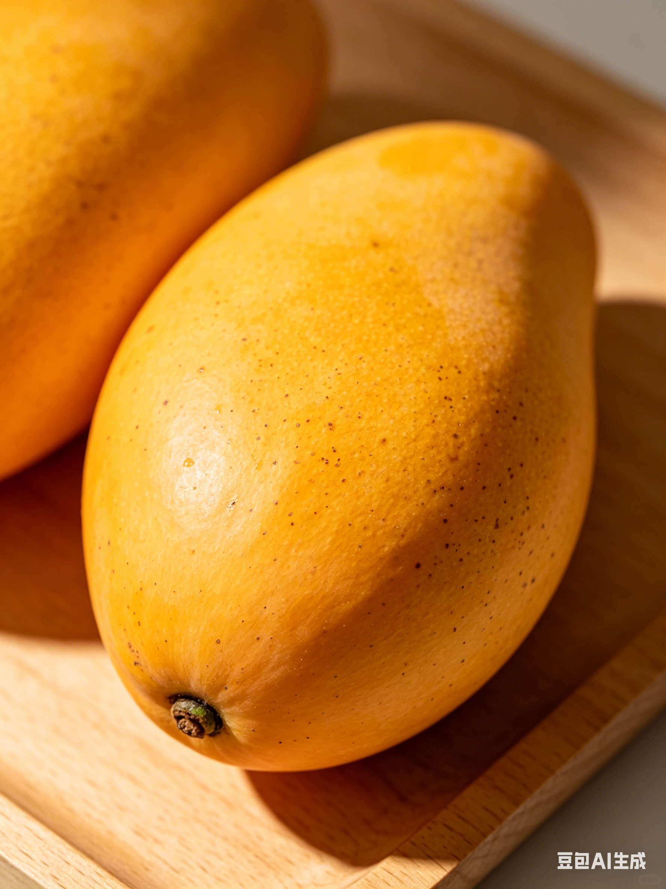

✨ 简介

芒果被誉为“热带水果之王”，原产于印度及东南亚地区，至今已有4000多年栽培历史。 果肉细腻多汁，甜中带微酸，富含多种维生素。无论是直接食用、榨汁、做甜品或入菜， 芒果都能带来令人愉悦的热带风情。全世界每年生产近5000万吨芒果，其中印度、中国和泰国是主要产区。
🥗 营养价值
| 成分 | 含量 | 每日参考占比* |
|---|---|---|
| 🔥 热量 | 60 kcal | 3% |
| 🍚 碳水化合物 | 15 g | 5% |
| 🍬 糖分 | 13.7 g | — |
| 🥦 膳食纤维 | 1.6 g | 6% |
| 💊 维生素C | 36.4 mg | 40% |
| 🅰️ 维生素A (RAE) | 54 µg | 6% |
| 🧂 钾 | 168 mg | 4% |
*参考占比基于每日2000卡路里膳食，数值仅供参考。
🌱 常见品种
🥭 贵妃芒 — 核薄肉厚，香气浓郁
🥭 台农一号 — 甜度高，口感细腻
🥭 金煌芒 — 个头巨大，几乎无纤维
🥭 青芒 — 适合蘸辣椒盐和做沙拉
不同品种的芒果甜度、纤维感和成熟颜色差异很大，从绿到橙黄都是宝藏。
📜 文化趣闻
在印度，芒果被认为是“圣果”，芒果树叶常被用于婚礼和宗教仪式。巴基斯坦和印度都将芒果奉为国果。而在中国，芒果汁是港式甜品杨枝甘露的灵魂。现代研究发现，芒果中的芒果苷具有抗炎和抗氧化的潜力。
💡 小知识：芒果的“腰子”形状是为了方便风传播种子，原始芒果只有核桃大小，经过千年驯化才有了今天的肥美多汁。